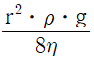
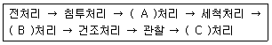
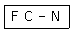
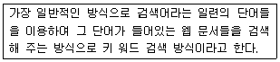

침투비파괴검사기사(구) (2008-09-07 기출문제)
1과목: 침투탐상시험원리
1. 다음 중 유화제의 특성을 설명한 것으로 옳은 것은?
- 불연속 부위에 침투액이 빨리 흡수되게 한다.
- 침투액의 독성을 완화시켜 중성으로 만들어준다.
- 침투액과 서로 용해되어 물세척이 가능하게 한다.
- 침투액에 함유된 형광염료의 가시성을 촉진시킨다.
(정답률: 알수없음)

2. 침투탐상용 재료가 갖추어야 할 특성으로 틀린 것은?
- 침투제는 온도안정성이 있어야 한다.
- 세척제는 산성이고, 부식성이 좋아야 한다.
- 유화제는 후유화성 침투액과 서로 잘 녹아야 한다.
- 현상제는 침투액을 분산시키는 능력이 좋아야 한다.
(정답률: 알수없음)
3. 다음 중 어두운 장소에서 대량 생산부품의 작은 나사나 열쇠구멍, 각이 날카로운 부품 등의 탐상에 가장 적합한 침투탐상 시험방법은?
- 후유화성 형광침투탐상시험법
- 수세성 형광침투탐상시험법
- 용제제거성 형광침투탐상시험법
- 용제제거성 염색침투탐상시험법
(정답률: 알수없음)
4. 액체의 유동속도(v)를 나타내는 식이

일 때 ŋ 가 의미하는 것은?(단, r 은 모세관의 반지름, p 는 액체의 밀도, g 는 중력가속도이다.)- 액체의 높이
- 액체의 무게
- 액체의 접촉각
- 액체의 점도
(정답률: 알수없음)
5. 다음 중 침적법에 의한 침투처리의 설명으로 틀린 것은?
- 소형 다량 제품에 적용이 적합하고, 수세법에 효과적이다.
- 침투액 처리 후 배액 처리를 해야 하며 배액된 침투액은 재사용이 가능하다.
- 결함속으로 침투액이 충분히 스며들 수 있도록 요구되는 침투시간 이상으로 침적한다.
- 침투액조에 먼지, 수분 등 이물질이 유입되어 성능을 저해할 수 있으므로 주기적으로 점검이 필요하다
(정답률: 알수없음)
6. 침투탐상시험에서 현상제를 적용한 후 최종적으로 관찰을 개시할 때까지의 시간을 무엇이라 하는가?
- 유화시간
- 현상시간
- 침투시간
- 처리시간
(정답률: 알수없음)
7. 초음파탐상시험에서 깊이 방향으로 인접한 두 불연속의 분해능을 증가시키기 위해 가장 좋은 방법은?
- 파장을 길게 한다.
- 주파수를 감소시킨다.
- 펄스 지속시간을 짧게 한다.
- 송신펄스의 강도를 증가시킨다.
(정답률: 알수없음)
8. 다음 중 자성체인 시험체에 침투탐상시험보다 자분 탐상시험의 신뢰성이 우수한 경우로 옳은 것은?
- 단면 급변부의 탐상
- 이종 재질의 경계면의 탐상
- 알루미늄 용접부의 표면 기공의 탐상
- 운전 중 발생한 미세한 표면균열의 탐상
(정답률: 알수없음)
9. 다른 비파괴검사법과 비교했을 때 와전류탐상시험의 설명으로 옳은 것은?
- 고온의 조건하에서 검사가 불가능하다.
- 관, 환봉 등에 대한 On-line 생산품의 검사가 불가능하다.
- 전기적 신호가 복잡하여 결과기록의 보존이 불가능하다.
- 표면 아래 깊은 곳에 있는 결함의 검출이 불가능하다.
(정답률: 알수없음)
10. 열처리 공정이 끝난 항공우주용 비자성 재료의 표면균열검출을 위해 검사 속도가 빠르고 비용이 저렴하여 널리 활용되고 있는 비파괴검사법은?
- 자분탐상시험
- 초음파탐상시험
- 침투탐상시험
- 방사선투과시험
(정답률: 알수없음)
11. 다음 중 단조품의 내부결함을 검출하는데 가장 적합한 비파괴검사법은?
- 자분탐상시험법
- 초음파탐상시험법
- 침투탐상시험법
- 와전류탐상시험법
(정답률: 알수없음)
12. 시험체의 표면에 대한 정보를 효율적으로 얻기 위해 행하는 비파괴검사법으로 볼 수 없는 것은?
- 육안검사
- 자분탐상시험
- 와전류탐상시험
- 방사선투과시험
(정답률: 알수없음)
13. 다음 중 어금니로 쓰기 위해 만든 세라믹 인공 치아의 갈라짐 검사에 가장 적합한 비파괴검사법은?
- 방사선투과시험
- 초음파탐상시험
- 자분탐상시험
- 침투탐상시험
(정답률: 알수없음)
14. 다음 중 용접부의 결함이 아닌 것은?
- 균열
- 콜드셧
- 용입불량
- 슬래그 개입
(정답률: 알수없음)
15. 관의 내경이 2.5cm 이고 내삽형 프로브의 코일 외경이 2.0cm 이면 와전류탐상시험의 충전율은 몇 % 인가?
- 64%
- 80%
- 125%
- 156%
(정답률: 알수없음)
16. 다른 누설검사법과 비교하여 기포누설시험의 장점으로 옳은 것은?
- 대체로 시험방법이 단순하다.
- 총 누설률을 검출할 수 있다.
- 시험 결과들이 대부분 정량적이다.
- 아주 높은 감도의 시험을 할 수 있다.
(정답률: 알수없음)
17. 다음 중 기포누설시험에 사용되는 발포액의 구비 조건으로 틀린 것은?
- 점도가 높을 것
- 젖음성이 좋을 것
- 온도에 의한 열화가 없을 것
- 진공하에서 증발하기 어려울 것
(정답률: 알수없음)
18. 다음 중 60kV 의 에너지를 내는 X선발생장치에서 방출하는 X선의 최소 파장은 약 몇 Å 인가?
- 0.1
- 0.2
- 0.3
- 0.4
(정답률: 알수없음)
19. 강제 대형 압력용기에 부착된 노즐의 표면 결함을 검출하기에 가장 적합한 비파괴검사법은?
- 누설검사
- 자분탐상시험
- 방사선투과시험
- 초음파탐상시험
(정답률: 알수없음)
20. 각종 비파괴검사법에서 시험체 내의 결함정보를 얻을 때 의사지시를 만들거나 또는 결함검출 능력을 저하시키는 요인과의 연결이 잘못된 것은?
- 방사선투과시험 : 산란선
- 초음파탐상시험 : 표면 거칠기
- 자분탐상시험 : 전극 지시
- 와전류탐상시험 : 적산효과
(정답률: 알수없음)
2과목: 침투탐상검사
21. 개방형 침투액조만 있어서 비교적 단시간내에 침투되어 침투액 증발이 적은 침투탐상검사를 하려고 한다. 다음 중에서 어떤 방법이 가장 적합한가?
- 수세성 형광침투탐상검사
- 수세성 염색침투탐상검사
- 후유화성 형광침투탐상검사
- 용제제거성 염색침투탐상검사
(정답률: 알수없음)
22. 다음 중 후유화성 침투탐상검사의 유화처리 방법으로 옳은 것은?
- 유화처리는 붓칠로 한다.
- 침투액과 유화제를 잘 혼합하여 사용한다.
- 가능한 한 유화제 도막을 균일하게 처리한다.
- 침투시간이 경과한 후 건조처리를 하고 유화제를 적용한다.
(정답률: 알수없음)
23. 침투상검사에서 일반적으로 맨 마지막으로 수행해야하는 절차는?
- 판독
- 평가
- 후처리
- 제거처리
(정답률: 알수없음)
24. 다음 중 침투탐상검사에 사용되는 건조장치로서 가장 바람직한 것은?
- 전열식 건조기
- 열풍식 건조기
- 백열등식 건조기
- 적외선식 건조기
(정답률: 알수없음)
25. 다음 중 특수목적의 침투탐상검사법과 매커니즘의 조합이 틀린 것은?
- 기체 방사성동위원소법 : Kr-85 이용
- 하전입자법 : 탄산칼슘 분말입자 이용
- 휘발성 액체법 : 휘발성 알코올 이용
- 여과입자법 : 누설전류 이용
(정답률: 알수없음)
26. 다음 중 서로 다른 두 종류의 침투제에 대한 균열 검출 능력을 비교하기 위한 방법으로 가장 적절한 것은?
- 접촉각을 측정하여 비교한다.
- 비중계를 사용하여 비중을 측정하여 비교한다.
- 점도계를 사용하여 점성을 측정하여 비교한다.
- 균열이 있는 침투탐상용 대비시험편으로 시험하여 비교한다.
(정답률: 알수없음)
27. 형광침투탐상검사에는 자외선조사장치를 사용한다. 자외선 조사장치에 대한 설명으로 옳은 것은?
- 사용되는 자외선의 파장은 320~420Å 범위 내의 것이 사용된다.
- 주로 많이 사용되는 자외선조사등으로는 수은증기램프가 있다.
- 자외선조사등의 강도는 μV/cm2 의 단위를 사용한다.
- 전원의 점등 회수는 전등 사용수명과는 무관하다.
(정답률: 알수없음)
28. 습식형상법에 의한 후유화성 형광침투탐상검사의 순서가 다음과 같을 때 ( ) 안에 적합한 공정은?

- A : 유화 B : 현상 C : 후
- A : 현상 B : 후 C : 유화
- A : 후 B : 유화 C : 현상
- A : 현상 B : 유화 C : 후
(정답률: 알수없음)
29. 다음 중 침투액의 침투속도를 증가시키기 위한 조건으로 옳은 것은?
- 온도가 낮을수록 좋다.
- 접촉각이 클수록 좋다.
- 표면장력이 작을수록 좋다.
- 점성계수가 작을수록 좋다.
(정답률: 알수없음)
30. 주조품을 검사할 때 주로 단면이 변화하는 부위에 폭이 매우 좁은 선형지시가 나타났다. 검출된 지시의 예상되는 불연속 종류로 가장 적절한 것은?
- 기공(Porosity)
- 콜드셧(Cold shut)
- 수축관(Shrinkage)
- 개재물(Inclusion)
(정답률: 알수없음)
31. 다음 중 침투액 용기에서 가장 흔히 발견할 수 있고 또한 탐상시 가장 큰 영향을 미치는 오염 물질은?
- 물
- 기름
- 청정제
- 금속 찌꺼기
(정답률: 알수없음)
32. 단조품의 결함은 주괴의 결함, 단조 , 열처리 및 기계가공 과정에서 발생한다. 다음 중 단조품의 결함이 아닌 것은?
- 백정(Flake)
- 겹침(Lap)
- 탕계(Cold Shut)
- 터짐(Burst)
(정답률: 알수없음)
33. 다음 중 니켈 및 티타늄 재료를 침투탐상검사하는 경우 탐상제에 함유된 물질 중 규정치 이하로 규제되어야 하는 원소로만 나열된 것은?
- Cu, S
- S, Cl
- F, C
- S, C
(정답률: 알수없음)
34. 알루미늄재질로 생산한 제품을 침투탐상검사할 때 다음 결함 중 침투시간을 가장 길게 하여야 하는 것은?
- 용정부의 갈라짐
- 단조품의 갈라짐
- 용접부의 융합불량
- 주조품의 쇳물경계
(정답률: 알수없음)
35. 침투탐상검사에서 대비시험편을 사용하는 주목적은?
- 점성 측정
- 수분함량 확인
- 오염도 측정
- 탐상성능 확인
(정답률: 알수없음)
36. 다음 침투액의 인화점이 낮은 경우 탐상검사에서 1차적으로 고려하여야 하는 것은?
- 화재의 위험성
- 표면장력의 정도
- 모세관현상의 정도
- 검사자의 마취성
(정답률: 알수없음)
37. 시험체를 열풍으로 가열하여 결함 내부의 침투액이 결함 밖으로 나오게 하여 관찰하는 방법으로 부식되기 쉬운 시험체 등에 고감도 형광침투액과 함께 사용되는 현상법은?
- 무현상법
- 건식현상법
- 습식현상법
- 속건식현상법
(정답률: 알수없음)
38. 환기가 되지 않는 장소에서 판재에 국부적인 검사를 해야 할 때 침투액의 적용 방법으로 가장 적절한 것은?
- 침지법(Dipping)
- 분무법(Spraying)
- 흘림법(Flow on)
- 붓칠법(Brushing)
(정답률: 알수없음)
39. 다음 중 무관련지시가 아닌 것은?
- 압력고정쇠에서 흡입되어 나타난 지시
- 사용 중 검사시 주조품에서 나타난 기공 지시
- 세척이 불충분한 검사체에 나타난 줄무늬와 배경
- 작은 블라인드(blind)의 구멍에서 흡입되어 나타난 줄무늬
(정답률: 알수없음)
40. 다음 중 염색침투탐상검사시 시험면의 조도로 가장 적합한 것은?
- 20Lx
- 100Lx
- 300Lx
- 500Lx
(정답률: 알수없음)
3과목: 침투탐상관련규격
41. 항공 우주용 기기의 침투탐상 검사방법(KS W 0914)에서 침투액의 체류시간은 최소 10분동안으로 한다. 그러나 체류시간이 얼마나 초과하면 건조되지 않도록 침투액을 재적용하도록 규정하고 있는가?
- 30분
- 60분
- 90분
- 120분
(정답률: 알수없음)
42. 침투탐상 시험방법 및 침투지시모양의 분류(KS B 0816)에서 시험 방법의 분류 기호가 다음과 같을 때 “N” 의 의미는?

- 건식현상제를 사용한는 방법
- 습식현상제를 사용하는 방법
- 속건식현상제를 사용하는 방법
- 현상제를 사용하지 않는 방법
(정답률: 알수없음)
43. 보일러 및 압력용기에 대한 침투탐상검사(ASME Sec.V, Art.6)에서 자외선등을 사용하여 관찰할 경우의 설명으로 틀린 것은?
- 탐상은 어두운 곳에서 행하여햐 한다.
- 감광성 렌즈를 관찰에 사용하면 감도가 좋아진다.
- 자외선의 강도는 적어도 8시간마다 1회 측정하여야 한다.
- 자외선등은 강도 측정 전에 적어도 5분 동안 예열하여야 한다.
(정답률: 알수없음)
44. 침투탐상 시험방법 및 침투지시모양의 분류(KS B 0816)의 현상처리에 대한 설명이 옳은 것은?
- 습식현상제인 경우 현상제 적용 후 잉여 현상액은 세척액으로 닦아내어야 한다.
- 속건식현상제의 적용은 침지법이 일반적이다.
- 건식현상제의 적용은 세척처리 후 즉시 실시한다.
- 속건식현상제를 적용 후에는 시험면을 자연건조시킨다.
(정답률: 알수없음)
45. 다음 중 침투탐상 시험방법 및 침투지시모양의 분류(KS B 0816)에 규정된 탐상제에 속하지 않는 것은?
- 침투액
- 세척액
- 현상제
- 건조제
(정답률: 알수없음)
46. 침투탐상 시험방법 및 침투지시모양의 분류(KS B 0816)에서 전수 검사의 경우 합격한 시험체에 표시를 필요로 하는 경우에 표시하는 방법에 대하여 틀린 것은?
- 황색으로 시험체에 P 의 기호을 표시한다.
- 각인으로 시험체에 P 의 기호를 표시한다.
- 부식으로 시험체에 P 의 기호를 표시한다.
- P 의 표시가 곤란한 경우 적갈색으로 착색하여 표시한다.
(정답률: 알수없음)
47. 침투탐상 시험방법 및 침투지시모양의 분류(KS B 0816)에서 탐상 후 관찰에 대한 설명으로 틀린 것은?
- 침투지시모양의 관찰은 현상제를 적용 후 7~60분 사이에 한다.
- 형광침투액을 사용한 경우 관찰하기 전에 1분 이상 어두운 곳에서 눈을 적응시킨다.
- 염색침투액을 사용한 경우 관찰을 위한 시험면의 조도는 200룩스 이상의 자연광 또는 백색광이어야 한다.
- 형광침투액을 사용한 경우 시험체 표면에 800μW/cm2이상의 자외선을 비추면서 관찰한다.
(정답률: 알수없음)
48. 보일러 및 압력용기에 대한 침투탐상검사(ASME Sec, V , Art.6 App.Ⅲ)의 비교시험편에 대한 설명으로 옳은 것은?
- 재료는 니켈-크롬 합금이다.
- 비교시험편의 두께는 20mm이다.
- 시험편의 치수는 3인치 X 4인치이다.
- 시험편의 제조시 각 표면에 망상의 미세 균열이 발생하도록 한다.
(정답률: 알수없음)
49. 보일러 및 압력용기에 대한 침투탐상검사(ASME Sec, V , Art.6 App.Ⅲ)에서 용제제거성 잉여 침투액의 제거방법으로 적합하지 않은 것은?
- 침투제가 제거되는 것을 최소화하기 위해 용제를 다량으로 사용하지 않는다.
- 침투액 적용 후 현상처리 전에 용제를 시험면에 붓는다.
- 침투액의 흔적이 거의 없어질 때까지 걸레 등으로 제거한다.
- 규정된 침투시간이 경과한 후 표면에 잔류한 침투액을 제거해야 한다.
(정답률: 알수없음)
50. 보일러 및 압력용기에 대한 표준침투탐상검사(ASME Sec, V , Art.24 SE-165)에서 플라스틱의 균열검사시 권고된 최소 적용 침투시간은?
- 1분
- 3분
- 5분
- 7분
(정답률: 알수없음)
51. 압력용 이옴매 없는 강관 및 용접 강관 - 침투탐상검사(KS B ISO 12089)에 따른 탐상 결과가 허용되는 것보다 더 큰 지시로서 무관련지시라고 믿어지는 경우의 조치사항으로 옳을 것은?
- 재검사한다.
- 감독관과 협의 후 결정한다.
- 무관련지시이므로 합격시킨다.
- 허용 치수를 초과하므로 불합격시킨다.
(정답률: 알수없음)
52. 항공 우주용 기기의 침투탐상 검사방법(KS W 0914)에서 친유성 유화제의 적용 방법이 옳은 것만으로 나열된 것은?
- 붓칠, 분무
- 침지, 흘림
- 붓칠, 흘림
- 침지, 분무
(정답률: 알수없음)
53. 침투탐상 시험방법 및 침투지시모양의 분류(KS B 0816)에서 탐상 기록을 작성할 때 조작조건 항목에 포함되지 않는 것은?
- 관찰시간
- 세척시간
- 세척수의 온도
- 시험시의 온도
(정답률: 알수없음)
54. 보일러 및 압력용기에 대한 표준침투탐상검사(ASME Sec, V ,Art.24 SE-165)에 규정된 형광침투탐상 결과분석시 형광휘도에 영향을 줄 수 있어서 많은 주의가 요구되는 전처리 방법은?
- 산세척
- 알칼리세척
- 초음파세척
- 샌드블라스트
(정답률: 알수없음)
55. 침투탐상 시험방법 및 침투지시모양의 분류(KS B 0816)에 따른 유화제의 점검 방법으로 틀린 것은?
- 점도의 상승에 의해 유화성능이 저하되었을 때 폐기한다.
- 겉모양 검사를 하여 현저하게 흐림이나 침전물이 생겼을 때 폐기한다.
- 대비시험편을 사용하여 유화성능의 저하가 인정 되었을 때 폐기한다.
- 물베이스 유화제는 농도를 굴추계로 측정하여 규정농도와의 차가 1% 이상일 때 폐기한다.
(정답률: 알수없음)
56. 데이터통신 시스템 중 데이터 터미널 장치(DTE)의 기능으로 볼 수 없는 것은?
- 일출력 기능
- 신호 변환기 기능
- 전송 제어 기능
- 기억 기능
(정답률: 알수없음)
57. 인터넷의 개념이 아닌 것은?
- 세계를 연결하는 컴퓨터 통신망
- 여러 개의 네트워크가 연결된 통신망들의 특징
- 유닉스 운영체제만을 위한 세계적인 컴퓨터 통신망
- TCP/IP 프로토콜을 기반으로 하는 컴퓨터 통신망
(정답률: 알수없음)
58. 다음이 설명하고 있는 웹 페이지 검색엔진의 유형은?

- 주제별 검색
- 메뉴 검색
- 웹 인덱스 검색
- 지능형 검색
(정답률: 알수없음)
59. 다음 중 인터넷에서 IP 주소 대신 사용할 수 있는 것은?
- 호스트명
- 고퍼
- HTTP
- 도메인 네임
(정답률: 알수없음)
60. 운영체제의 성능평가와 거리가 먼 것은?
- 응답 시간
- 신뢰도
- 사용 가능도
- 비용
(정답률: 알수없음)
4과목: 금속재료학
61. 다음 중 백금(Pt)에 대한 설명으로 틀린 것은?
- 회백색으로 면심입방격자를 갖는다.
- 비중은 약 21.46 이며, 용융점은 약 1774°C 이다.
- 내열성 및 고온저항성이 우수하며 용해로, 광학기구등의 제작이 널리 사용된다.
- 백금의 재결정은 쌍정 생성이 많은 단면체 조직으로 가공성이 우수하다.
(정답률: 알수없음)
62. 전자강판(규소강판)에 요구되는 특성으로 옳은 것은?
- 철손(鐵損)이 클 것
- 투자율이 높고 포화자속밀도가 높을 것
- 사용 중에 자기 시효 변화가 클 것
- 박판을 적층하여 사용할 때 층간 저항이 낮을 것
(정답률: 알수없음)
63. 침탄은 C 원자의 확산에 의해 일어난다. 900°C에서 10시간 침탄했을 때 침탄 깊이가 1.2cm 이었다면 1.6cm 의 침탄층을 얻기 위해서는 같은 온도에서 약 몇 시간이 필요한가? (단, Harris 의 식을 이용한다.)
- 5
- 18
- 35
- 48
(정답률: 알수없음)
64. 청동의 주조시 일어나는 편석에 대한 설명으로 틀린 것은?
- 냉각속도가 클수록 편석이 많이 일어난다.
- 확산속도가 작을수록 편석이 많이 일어난다.
- 응고구간이 확장될수록 편석이 많이 일어난다.
- 개재물이 적을수록 편석이 많이 일어난다.
(정답률: 알수없음)
65. 엘렉트론(Elektron) 합금에 대한 설명으로 옳은 것은?
- Mg – Al 계 합금으로서 소량의 Zn 과 Mn을 첨가한 합금이다.
- Nl - Fe 계 합금으로 고강도 합금이다.
- Sn – Mg - Si - Mn 계 합금으로 시효경화성 합금이다.
- Al - Cu 계 합금으로서 전기전도도를 좋게 하기 위하여 소량의 Ag을 첨가한 합금이다.
(정답률: 알수없음)
66. Catridge brass 에 대한 설명으로 틀린 것은?
- 가공용 황동이다.
- 70%Cu + 30%Zn 황동이다.
- 판, 봉, 관, 선을 만든다.
- 금박대용으로 사용하며, 톰백이라고 한다.
(정답률: 알수없음)
67. 가단주철의 성질에 대한 설명으로 틀린 것은?
- 주조성이 우수하여 복잡한 주물을 만들 수 있다.
- 내식성, 내충격성, 내열성이 우수하고 절삭성이 좋다.
- 강도, 내력이 높은 편이며 경도는 Si 량이 많을수록 낮다.
- 흑심가단주철의 인장강도는 30~40 kgf/mm2 이다.
(정답률: 알수없음)
68. 산소나 탈산제를 품지 않은 구리로 전도성이 좋고 수소취성도 없어 전자기기 등에 사용되는 것은?
- 무산소동
- 탈탄동
- 전기동
- 정련동
(정답률: 알수없음)
69. Fe-C 평형 상태도에서 존재하지 않는 불변 반응은?
- 공정반응
- 공석반응
- 포정반응
- 포석반응
(정답률: 알수없음)
70. 베어링 합금으로 화이트메탈보다 내하중성이 커서 대부분 강대금(steel back)에 접착하여 바이메탈 베어링(bi-metal bearing)을 사용되는 일명 켈밋(kelmet)의 주요 합금 조성은?
- Pb - Ta
- Pb - Ca
- Cu - Pb
- Cu - Ti
(정답률: 알수없음)
71. 저 합금강의 2단 템퍼 취성에 대한 설명으로 틀린 것은?
- 결정림계에 불순물이 편석하는 것은 평형적 현상이다.
- 템퍼링한 합금강을 375~560°C 온도범위에서 등온적으로 시효처리하거나 템퍼링한 다음 서냉하면 발생한다.
- 입계취성을 일으키는 불순물 편석의 속도와 양은 강의 전조성(全組性)에 의해서 결정된다.
- 연성-취성 전이 온도는 직접 입계의 불순물 농도에 의해서 결정되는데 불순물 영향의 정도는 P ＞ Sn ＞ Sb 순이다.
(정답률: 알수없음)
72. 다음 중 라우탈(Lautal)의 합금 성분으로 옳은 것은?
- Cu - Si - P
- Al - Ni - Pb
- Al - Cu - Si
- W - Ni - Mg
(정답률: 알수없음)
73. 투과전자현미경에 의한 시험편 표면구조를 관찰하기 위한 방법으로 사용되는 레프리카(Raplica)법이 아닌 것은?
- 플라스틱 레프리카법
- 탄소 레프리카법
- 영상 레프리카법
- 산화물 레프리카법
(정답률: 알수없음)
74. 재료의 연성을 알기 위한 것으로 구리판, 알루미늄 등의 판재를 가압성형하여 변형능력을 시험하는 것은?
- 크리프시험
- 스프링시험
- 마모시험
- 에릭선시험
(정답률: 알수없음)
75. Al-4%Cu 합금을 시효처리할 때, 관찰되지 않는 것은?
- GP zone
- θ 상
- θ′ 상
- η 상
(정답률: 알수없음)
76. 다음 중 분말야금에 대한 설명으로 틀린 것은?
- 생산할 수 있는 제품의 크기와 형상에는 제한이 없다.
- 고용도의 제한이 없기 때문에 다양한 합금설계를 할 수 있다.
- 최종제품의 형상으로 가공할 수 있어 절삭가공을 생략할 수 있다.
- 용융정이 높은 재료의 경우에는 용융하지 않고 제품을 제조할 수 있다.
(정답률: 알수없음)
77. 고망간(12~14%Mn) 강(steel)을 약 1⑤0°C 부근에서 급냉 하는 수인법(水靭法)을 실시하였을 때 상온에서 나타나는 조직은?
- 시멘타이트(Cemetite)
- 오스테나이트(Austenite)
- 레데뷰라이트(Ledeburite)
- 페라이트(Ferrite)
(정답률: 알수없음)
78. 은백색의 금속으로 비중이 1.85 이며, 중성자를 잘 통과시키므로 원자로 연료의 피복제, 중성자의 반사재나 원자핵분열기에 사용되는 금속은?
- Ge
- Be
- Si
- Te
(정답률: 알수없음)
79. 다음 중 비정질 합금의 제조 방법이 아닌 것은?
- 금속액체의 액체급냉법
- 고체침탄법
- 금속가스의 증착법
- 전기 또는 화학도금법
(정답률: 알수없음)
80. 다음 중 항은냉각 방법이 아닌 것은?
- 마퀜칭(Maquenching)
- 마템퍼링(Martempering)
- 인상 담금질(Time quenching)
- 오스템퍼링(Austempering)
(정답률: 알수없음)
5과목: 용접일반
81. 용접전류가 400A, 아크 전압은 35V, 용접속도가 20cm/min 일 때 단위 길이당 용접 입열은 몇 J/cm 인가?
- 42000
- 42500
- 44000
- 45500
(정답률: 알수없음)
82. 일렉트로 슬래그 용접법에 대한 특징 설명으로 틀린 것은?
- 용접 진행중 용접부를 직접 관찰할 수 있다.
- 최소한의 변형과 최단 시간의 용접법이다.
- 용접 능률과 용접 품질이 우수하다.
- 높은 입열로 인하여 용접부의 기계적 성질이 저하될 수 있다.
(정답률: 알수없음)
83. 용접법 중 압전(pressure welding)에 속하는 것은?
- 플래시 용접
- 전자 빔 용접
- 테르밋 용접
- 피복금속 아크 용접
(정답률: 알수없음)
84. 정격 2차전류가 300A 정격 사용류이 40%인 아크 용접기에서 200A로 용접시의 허용사용율(%)은?
- 40
- 60
- 90
- 100
(정답률: 알수없음)
85. 용접시 발생하는 회전 변형의 방지대책 설명으로 틀린 것은?
- 필요에 따라 용접 끝 부분을 구속한다.
- 미리 수축을 예측하여 그만큼 벌려 놓는다.
- 길이가 긴 경우 2명 이상의 용접사가 이음의 길이를 정해놓고 동시에 용접을 시작한다.
- 용접시 열을 될 수 있는 한 많이 받게 한다.
(정답률: 알수없음)
86. 전류가 높고 아크 길이가 특히 긴 경우에 발생하며 용접금속의 비산에 의한 용접봉의 손실을 초래하는 결함은?
- 기공
- 오버 랩
- 설퍼균열
- 스패터
(정답률: 알수없음)
87. 용접용 탄산가스의 용기도색으로 맞는 것은?
- 녹색
- 청색
- 황색
- 백색
(정답률: 알수없음)
88. 아크용접에서 언더컷의 원인이 되는 것과 관계없는 것은?
- 아크 길이가 너무 길 때
- 용접속도가 적당하지 않을 때
- 부적당한 용접봉을 사용할 때
- 전류가 너무 낮을 때
(정답률: 알수없음)
89. 불황성가스 텅스텐 아크 용접(TIG용접)에서 청정작용(Cleaning action) 설명으로 가장 적합한 것은?
- 텅스텐 전극에 의한 정류작용
- 정극성에서는 전자가 모재에 빠르게 충돌하기 때문에 모재에 열을 발생기키는 작용
- 헬륨가스를 사용하는 정극성에서는 아크가 그 주변의 모재표면에 열을 발생시키는 작용
- 아르곤(Ar) 가스를 사용하는 직류 역극성에서는 아크 그 주변의 모재 표면에 산화막을 제거하는 작용
(정답률: 알수없음)
90. 용접기에서 멀리 떨어져 작업을 할 때 작업위치에서 전류를 조정할 수 있는 장치는?
- 원격제어 장치
- 고주파 장치
- 핫 스타트 장치
- 전격 방지 장치
(정답률: 알수없음)
91. 용접 홈 설계시 고려 해야 할 사항이 아닌 것은?
- 홀의 단면적은 가능한 크게 한다.
- 루트 반지름은 가능한 크게 한다.
- 루트간격의 최대치는 사용 용접봉의 지름을 한도로 한다.
- 적당한 루트 간격과 루트면을 만들어 준다.
(정답률: 알수없음)
92. 주철의 보수용접 방법 중 모재와 융합이 잘되는 용접봉으로 융착시킨 후 나중에 고장력 강봉이나 연강과 융합이 잘되는 모넬메탈봉으로 용접하는 방법은?
- 스터드법
- 비녀장법
- 버터링법
- 로킹법
(정답률: 알수없음)
93. 용접부의 비파괴 시험법에 해당되지 않는 것은?
- 부식시험
- 침투시험
- 누설시험
- 음향시험
(정답률: 알수없음)
94. 탄산가스 아크 용접기로 두께가 4mm인 박판(연강판)을 용접전류 150A로 I형 맞대기 용접하고자 할 때 적당한 아크 전압[V]은?
- 16~19
- 20~23
- 23~26
- 27~29
(정답률: 알수없음)
95. 무부하 전압이 80V이고 아크전압이 30V인 AW-200교류용접기를 사용할 때 내부손실을 4KW라 하면 이 용접기의 효율과 역률은?
- 효율: 62.5% 역률: 60%
- 효율: 62.5% 역률: 54%
- 효율: 54% 역률: 62.5%
- 효율: 54% 역률: 62.5%
(정답률: 알수없음)
96. 용접재를 서로 맞대어 가압하면서 대전류를 통하고 축 방향에 큰 압력을 주어 용접하는 전기저항 용접법은?
- 업셋 용접
- 프로젝션 용접
- 심 용접
- 마찰 용접
(정답률: 알수없음)
97. 아세틸렌가스와 접촉하면 폭발성 화합물을 생성하는 금속은?
- 강
- 주철
- 구리
- 알루미늄
(정답률: 알수없음)
98. 산소-아세틸렌 가스용접 작업시 전진법과 비교한 후진법의 특징 설명으로 틀린 것은?
- 용접변형이 작다
- 열 이용률이 좋다
- 용접속도가 느리다
- 용착금속의 조직이 미세하다
(정답률: 알수없음)
99. 피복 금속 아크 용접봉에 도포(塗布)되는 용제(Flux)의 기능 설명으로 틀린 것은?
- 스패터 발생을 적게 한다.
- 아크(arc)의 발생 안전 및 유지를 용이하게 한다.
- 가스를 발생시켜서 대기(大氣)의 침입을 방지한다.
- 적당한 아크 전압과 용융점이 높은 슬랙을 만든다.
(정답률: 알수없음)
100. 가스용접시 저압(발생기식) 토치에 사용되는 아세틸렌의 압력은 약 몇 kgf/cm2이하인가?
- 0.0⑤
- 0.07
- 0.1
- 1
(정답률: 알수없음)